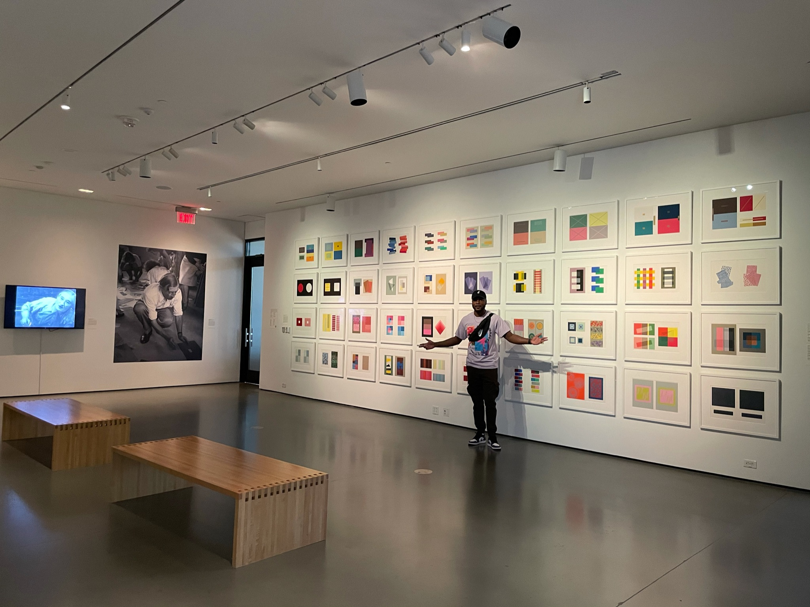

Standing in an ailse of arts at the Mint Museum
Personal background: I am originally from Ghana, West Africa. I moved to the USA in 2017 to live with my dad and also to go to college
Professional: I have been working my first job for 4 years now and just recently landed an internship with Atlas Technologies and Automation for which I am very grateful for
Academic background: I am currently a Junior computer science student working towards my Bachelors. I am concentrating in the field of Software Engineering and for that I do need a very good experience in Web Design and Development hence my reason for taking this course
Background in the subject matter of this course: I have had fair experience in web design during the course of my internship and I am yearning for perfection in web design
Primary Computer Platform: I have also used a Windows 7-10 at home and work to program thus far and hoping to learn the MAC side of things later on
Courses I'm taking this semester:
ITSC2600 - CS Program, Identity and Career - A seminar course to help me understand what it will take me to succeed in my career as a computer scientist
ITSC3130 - Human Centered Design - A vital part of computer science and software engineering which will help me in understanding how we can use Technologies to make human and computer interactions easy and safer
ITIS3135 - Web Design & Development - I want to build on Web Development experience in general
Funny story or interesting item about yourself to remember you by:
I hiked to the top of Chimney rock only to feel nauseous and take a puke on the top of the rock
I'd also like to share:
I love web development because it makes you see how most website are built and how they function